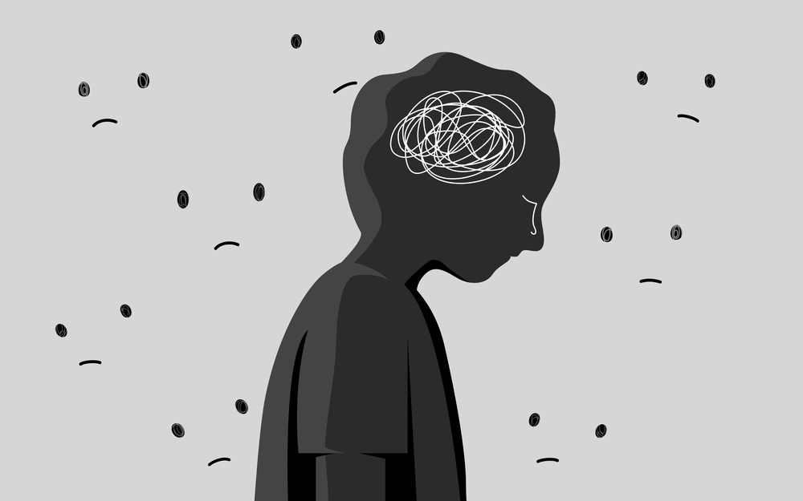

The cultural stigma around mental illness compounds these challenges. Mental health issues are seen as personal or even family failures rather than medical conditions in many Asian societies. The phrase “psychiatric stigma” is used to describe the idea of perceiving mental illness as a shame. In countries like China, strong psychiatric stigma is attached to the family because of the burden of intense shame and guilt they carry. Mental illness tarnishes family honor, name, and ancestors. The origin of psychiatric stigma is partly in the fear of the Chinese family exposing its shame to outsiders. The stronger the wish to conceal its ‘disgrace’ from being exposed, the more intense the psychiatric stigma. Some Asian cultures are preventing students from expressing their mental conditions, causing an inner cycle of negative emotions.
Image source: https://www.madinamerica.com/2025/01/stigma-worsened-by-mental-health-literacy-interventions/